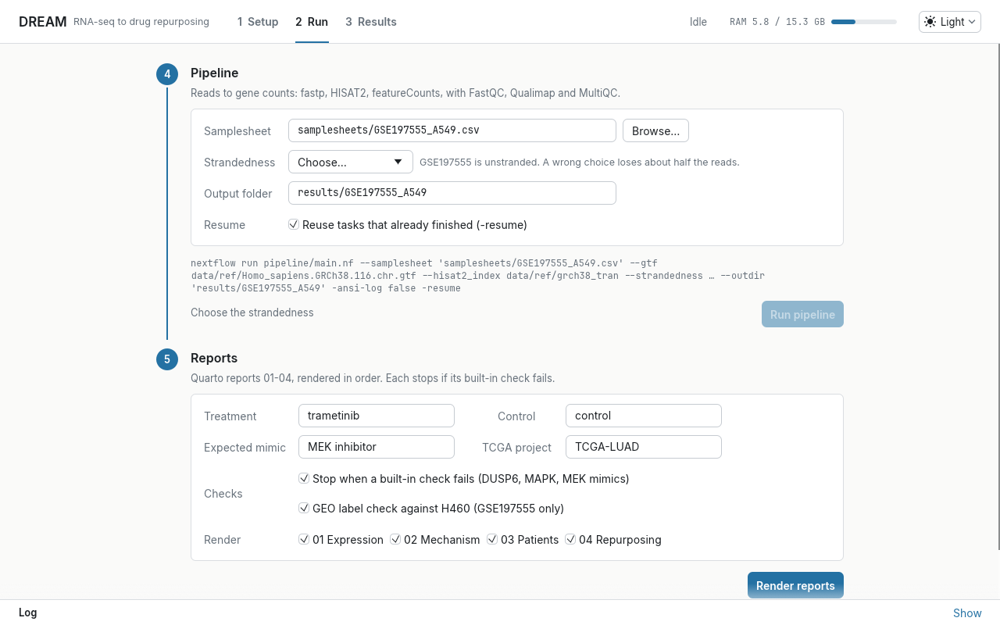

Four results from one run
3,516 genes change, and all 10 ERK targets fall.
DESeq2 with shrunken fold changes, adjusted p < 0.05 and |log2 FC| > 1: 1,601 up, 1,915 down.

MAPK is the most suppressed pathway, and PI3K rises.
PROGENy activity: MAPK −14.8, PI3K +5.7. Losing ERK feedback lifts PI3K, the escape route behind MEK + PI3K combinations.

The ERK programme marks KRAS- and EGFR-mutant tumours.
MAPK Pathway Activity Score in 503 TCGA lung adenocarcinomas: KRAS p ≈ 1e-15, EGFR p ≈ 1e-5. No link to survival.

Searching 13,205 drugs puts MEK inhibitors first.
LINCS 2020 connectivity: MEK inhibitors hold the top six ranks (p ≈ 3e-10), a built-in positive control.
- 1Ro-49876551.59
- 2PD-03259011.48
- 3refametinib1.44
- 4AZD-83301.44
- 5U-01261.43
- 6TAK-7331.42
- 7BRD-K887073331.40
MEK inhibitorother
A surprise in the data
The GEO labels for the A549 samples appear to be swapped. In the samples GEO calls trametinib, every classic ERK target gene is higher, the opposite of what a MEK inhibitor does.
The H460 samples from the same series, run through the same pipeline, move the expected way. DREAM corrects the A549 labels, keeps the originals alongside, and the report stops with an error if this evidence ever changes. No correction has been published for the series, so this is an inference from the data.
How it runs
A Nextflow pipeline turns reads into counts; four Quarto reports take it from there. Every report has a built-in check that stops it if the biology points the wrong way.
- 1DownloadSRA reads
- 2Trim and checkfastp, FastQC
- 3AlignHISAT2, GRCh38
- 4CountfeatureCounts, Qualimap, MultiQC
- 5ExpressionDESeq2, fgsea
- 6MechanismdecoupleR: PROGENy, CollecTRI
- 7PatientsTCGA-LUAD, ssGSEA, Cox
- 8DrugsLINCS 2020, signatureSearch
Pinned conda environments, sha256-checked downloads, and a CI run of the pipeline on simulated reads at every push. Runs on a 15 GB laptop.
Run it from a window
The release ships a small desktop app, Run_Dream. It checks your setup, downloads the reference data, runs the pipeline and the reports one job at a time, and opens the results.
Prefer a terminal? Run_Dream-cli does the same steps: ./Run_Dream-cli status, then setup, run and report.

Reports
Rendered HTML with code, figures and the reasoning behind each step.
Download
Linux, x86_64.
- Download DREAM-v0.1.2-linux-x86_64.tar.gz from the latest release.
- Extract it:
tar -xzf DREAM-v0.1.2-linux-x86_64.tar.gz - Open the folder and double-click Run_Dream. The Setup tab shows what is missing and downloads the data (about 19 GB) when you ask.
DREAM also needs Miniforge, Java 17 or later and Nextflow; the Setup tab links to each.